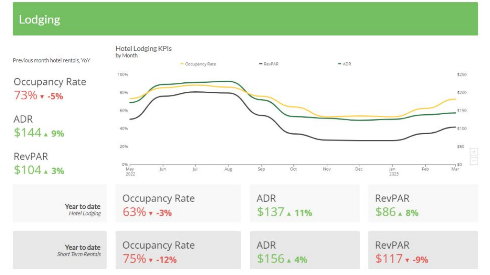
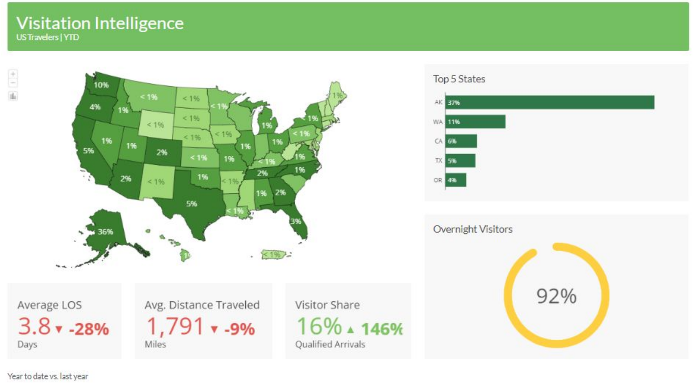
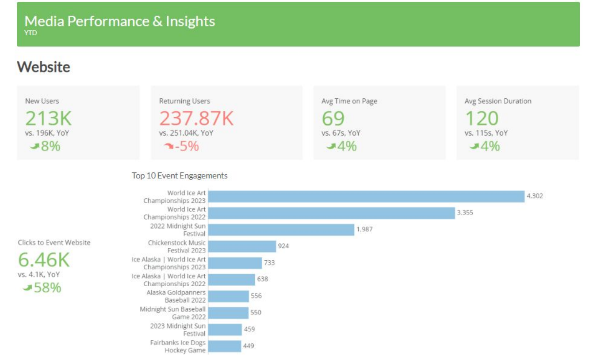

BI Showcase | Executive Summary
Objective
This project will help showcase my role from start to finish on BI product development and implementation. The summary below is inclusive of only one element in a larger product.
Data sources utilized
Hotel and lodging performance
Foot traffic geolocation patterns
Website health and traffic behavior
Media analytics, both paid and earned
Situation
The business intelligence product that I developed for each client was modular in nature, including drill-downs to various level of the organization. The Executive Summary was a summation of the key business objectives and performance indicators that would provide at-a-glance insights on industry health to stakeholders across each facet of their organization. This product required deep industry knowledge, skills in client relations and communication, and full-stack technical knowledge for effective project management between engineering and analysis.
Tasks
Client assets in multiple data formats and aquisition methods were ascertained. Data processing and cleaning was a cross-collaborative effort between myself and the data engineers. Common challenges in this phase ranged from client communication, to data warehousing.
The process
An agile approach was implemented at each step from asset collection, development, reviews, edits, and final product launch. The finalized report was presented to stakeholders with varying levels of data literacy in both written and oral form.
Results
Destination funding largely came from taxed hotel dollars. Growth in this area meant increased funding for media efforts which mutually benefitted our organizations. Hotel lodging focused on two main sources, hotel, and short term rentals. Monitoring year-over-year performance and seasonal trends of these KPIs was an essential financial indicator destination health.
Visitor foot traffic was another central area of focus as this gave a comprehensive analysis on visitor trends and audience behavior while in market. Year-over-year behavior indicated changes in length of stay, repeat visitation, and changes in key visiting markets to aid in targetted marketing efforts.
Lastly, media performance of both the paid and earned variety were tracked to understand rising and falling trends of traveler intent, and successful media efforts, to name a few. Featured to the left includes website traffic performance. A plethora of media sources not featured in this screenshot including social, PR, and earned referrals.